原文连接:https://www.cnblogs.com/lifexy/p/10921958.html
Qt 提供了 QtSql 模块来提供平台独立的基于 SQL 的数据库操作。这里我们所说的“平台
独立”，既包括操作系统平台，也包括各个数据库平台,Qt支持以下几种数据库:
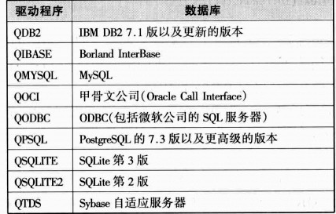
- QT自带SQLITE数据库,不需要再安装
- QTDS在Qt4.7起已经被移除
1.QtSql
要使用QtSql 模块的话,需要在.pro文件中添加这么一句：
QT += sql
2.QSqlDatabase
QSqlDatabase类提供了一个接口，用于通过连接访问数据。QSqlDatabase的一个实例表示连接。该连接通过受支持的数据库驱动程序之一提供对数据库的访问，该驱动程序派生自QSqlDriver。
2.1 创建一个数据库示例如下
QSqlDatabase db = QSqlDatabase::addDatabase("QSQLITE"); db.setDatabaseName("scooters.dat"); //如果本目录下没有该文件,则会在本目录下生成,否则连接该文件 if (!db.open()) { QMessageBox::warning(0, QObject::tr("Database Error"), db.lastError().text()); return false; }
编译运行后,可以看到已经创建了该文件:
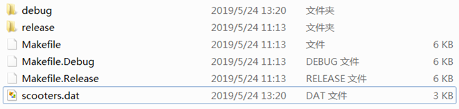
创建成功后,该文件默认为空的,然后就可以使用QSqlQuery类来操作该数据库, QSqlQuery类使用的是SQL语句，如果只需要使用高层次的数据
库接口（不关心 SQL 语法），我们可以选择 QSqlTableModel 和
QSqlRelationalTableModel(在后续章节介绍)。本章我们介绍
QSqlQuery 类,来如何使用SQL语法.
3.QSqlQuery类介绍
通过exec()成员函数来执行DML(数据操作语言)语句，如SELECT、INSERT、UPDATE和DELETE，以及DDL(数据定义语言)语句等.
比如:
QSqlQuery query;
query.exec("DROP TABLE students"); //删除名为students的表4.接下来,我们讲讲如何导入数据
创建表:
query.exec("CREATE TABLE students (" "id INTEGER PRIMARY KEY AUTOINCREMENT, " "name VARCHAR(40) NOT NULL, " " score INTEGER NOT NULL, " "class VARCHAR(40) NOT NULL)"); //创建一个students表,标题分别为id、name、score、class
" PRIMARY KEY AUTOINCREMENT,":表示该列为整数递增,如果为空时则自动填入1,然后在下面的每一行都会自动+1, PRIMARY KEY则表示该列作为列表的主键,通过它可以轻易地获取某一行数据
" INTEGER ":表示该列为带符号的整数
" VARCHAR(40) ":表示该列为可变长字符串,默认只能存储英文和数字或者utf-8,最多存储40个字节.
"NOT NULL "：表示该列的内容不为空
导入数据:
query.exec("INSERT INTO students (name, score,class) " "VALUES ('小张', 85, '初2-1班')"); //向students表里的(name, score,class)标题下插入一项数据'小张', 85, '初2-1班'
添加后如下图所示:
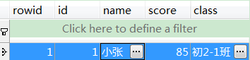
5.批量导入库
如果我们有大串数据需要导入时,也可以使用prepare()来绑值,然后再通过bindValue()向绑值加入数据
示例代码如下所示:
QStringList names;
names<<"小A"<<"小B"<<"小C"<<"小D"<<"小E"<<"小F"<<"小G"
<<"小H"<<"小I"<<"小G"<<"小K"<<"小L"<<"小M"<<"小N";
QStringList clases;
clases<<"初1-1班"<<"初1-2班"<<"初1-3班"<<"初2-1班"
<<"初2-2班"<<"初2-3班"<<"初3-1班"<<"初3-2班"<<"初3-3班";
QSqlDatabase db = QSqlDatabase::addDatabase("QSQLITE");
db.setDatabaseName("students.dat"); //在本目录下生成
QSqlQuery query;
query.exec("DROP TABLE students"); //先清空一下表
query.exec("CREATE TABLE students ("
"id INTEGER PRIMARY KEY AUTOINCREMENT, "
"name VARCHAR(40) NOT NULL, "
" score INTEGER NOT NULL, "
"class VARCHAR(40) NOT NULL)");
//创建一个students表
query.prepare("INSERT INTO students (name, score,class) "
"VALUES (:name, :score, :class)");
//为每一列标题添加绑定值
foreach (QString name, names) //从names表里获取每个名字
{
query.bindValue(":name", name); //向绑定值里加入名字
query.bindValue(":score", (qrand() % 101)); //成绩
query.bindValue(":class", clases[qrand()%clases.length()] ); //班级
query.exec(); //加入库中
}运行后,通过SQLite工具打开students.dat,如下图所示:
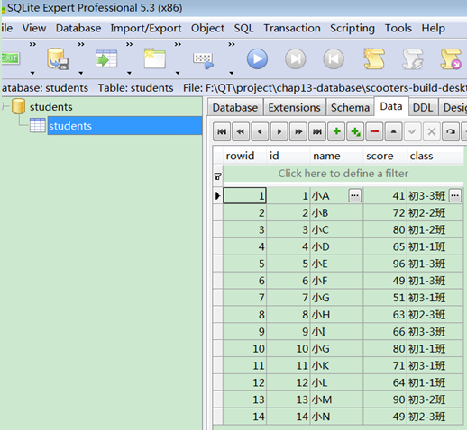
6.查询表内容
我们对上图生成的students.dat文件进行查询内容时,则需要使用WHERE 关键字实现.
示例-查询成绩值为60~80之间的学生:
query.exec("SELECT * FROM students WHERE score >= 60 AND score <= 80;"); while(query.next()) { QString id = query.value(0).toString(); QString name = query.value(1).toString(); QString score = query.value(2).toString(); QString classs = query.value(3).toString(); qDebug()<<id<<name<<score<<classs; }
运行打印:
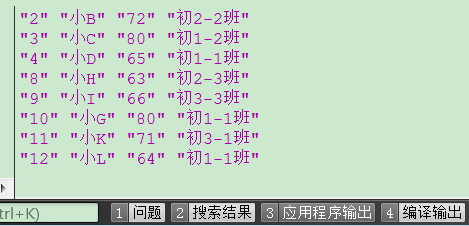
当然还有其它语句,比如:
"SELECT * FROM students WHERE score >= 80 OR class == '初3-3班';"
//判断成绩大于等于80,或者班级为初3-3班的打印如下图所示:
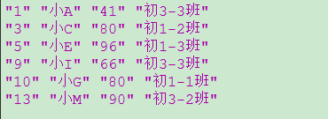
"SELECT * FROM students WHERE class GLOB '*3-3*';" // GLOB表示通配符,匹配班级带有"3-3"的名字
打印如下图所示:
详解6.png)
PS：如果想查询所有内容,则改为 query.exec("SELECT * FROM students ");
7.删表内容
删表内容有3个语句:
- DROP: 用来删除整表,并且连表结构也会删除,删除后则只能使用CREATE TABLE来重新创建表
- TRUNCATE: 在SQLite中没有该语句,在MySQL中有该语句,用来清楚表内数据,但是表结构不会删除.
- DELETE: 删除部分记录,并且表结构不会删除,删除的速度比上面两个语句慢,可以配合WHERE来删除指定的某行
示例1
query.exec("DELETE FROM students"); //删除students表里所有内容
删除后如下图所示:
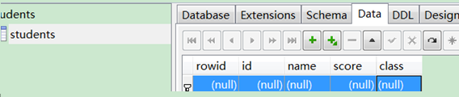
示例2-删除id=3的一行
query.exec("DELETE FROM students WHERE id = 3");
删除前:
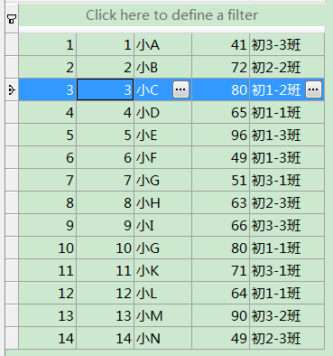
删除后:
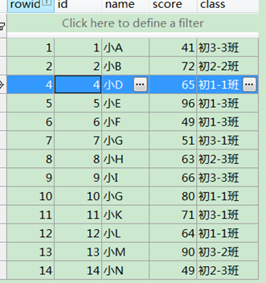
8.改表内容
改表内容一般用下面两个语句:
- UPDATE : 用来修改表中内容,可以通过WHERE语句来指定修改
- ALTER TABLE: 用来重命名表,或者在已有的表中添加新的一列
8.1 ALTER 示例
示例1
query.exec("ALTER TABLE students RENAME TO new_students"); //将students重命名为new_students
运行后如下图所示:
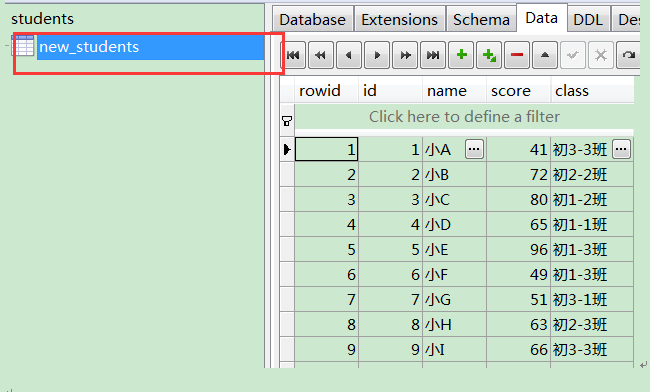
示例2
query.exec("ALTER TABLE new_students ADD COLUMN 结果 VARCHAR(10)"); //向 new_students表里添加新的一列,标题为结果,内容格式为VARCHAR
运行后如下图所示:
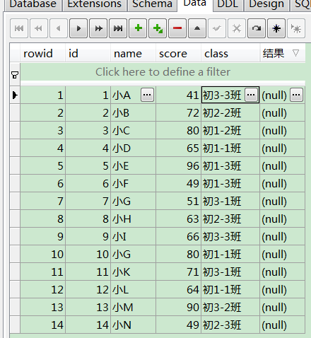
8.2 UPDATE 示例
示例1-不使用WHERE,直接修改某列
query.exec("UPDATE new_students SET score = 100 , name = '小A'"); //修改score和name所在的列内容
修改后如下图所示:
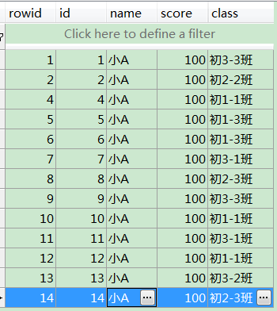
示例2-使用WHERE,判断小于60的设为不合格,否则设为合格
query.exec("UPDATE new_students SET 结果='不合格' WHERE score<60 "); query.exec("UPDATE new_students SET 结果='合格' WHERE score>=60 ");
修改前如下图所示:
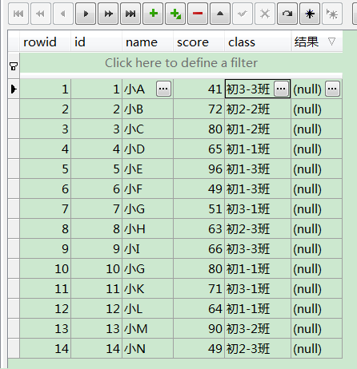
修改后:
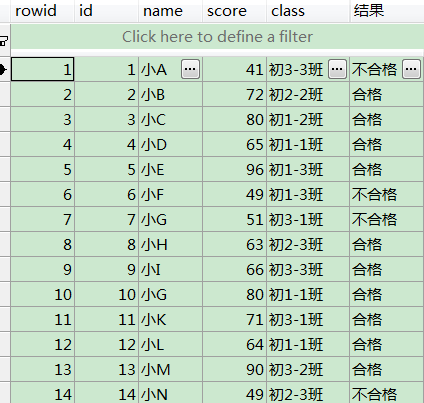